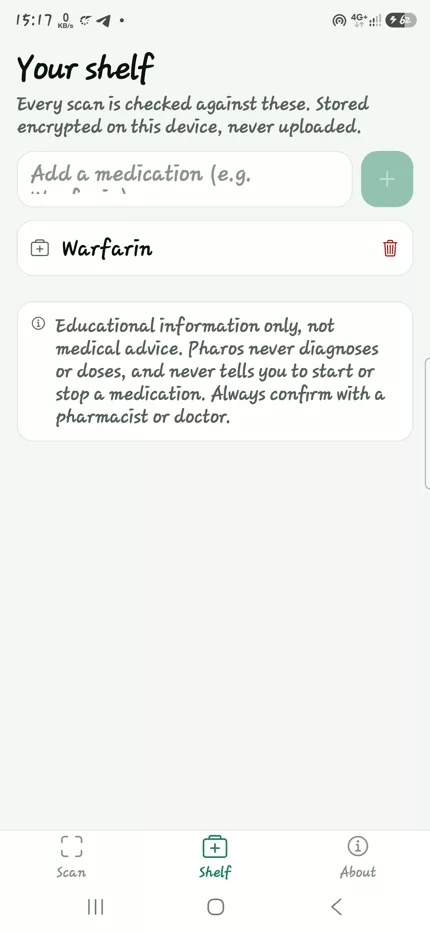
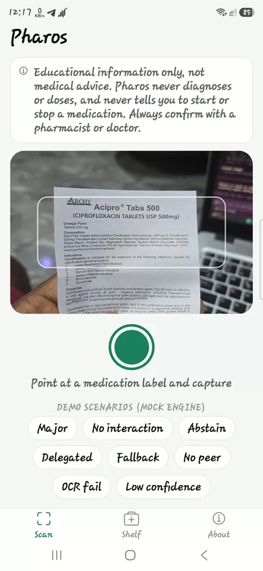

Demo proof
Show the phone. Show the source. Show the guardrail.
This page is the judge path for the working build: S25 Ultra final APK, visible label scan, private shelf comparison, documented DDInter interaction, and a bounded medical disclaimer.
Add Warfarin to the saved medication shelf. The shelf is the user’s private context for comparison.
Point the camera at the Acipro label. Pharos reads Ciprofloxacin from the label and keeps the scan flow on-device.
The app reports Ciprofloxacin × Warfarin as Major, cites DDInter 2.0, and gives plain-language next steps.
Pharos is not saying a medication is safe or unsafe for a specific patient. It surfaces documented interactions for professional follow-up.

Validated screens
The exact story to record.
Use the real app for the demo. The screenshots below are only proof anchors so reviewers immediately understand what the live phone flow is expected to show.

Private comparison set
Warfarin is saved locally, then every scan is checked against it.

Visible medication label
The camera frame shows the label the app reads before the model explains anything.
Grounded Major warning
The result cites DDInter 2.0 and stays inside an educational warning boundary.
Recording checklist
Five minutes, no detours.
The goal is not to show every feature. The strongest demo is one clean end-to-end run plus the evidence links.
Open with the thesis
“Pharos is private medication interaction AI. It retrieves documented interaction facts and explains them on-device.”
Show the S25 flow
Open shelf, scan the Acipro label, wait for the result, then call out Major and DDInter source.
Close with proof
Point to the final APK release, reproducibility docs, 38/38 checks, and the QVAC SDK integration.